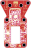

Input hub
Connects the scroll wheel, click pedals, and slipper to your computer over USB.
Input hub notesExplore the two circuit boards from v0.4.0, get the files to make them, and check how the hub and slipper connect.
Open either board in KiCanvas to inspect the layout and schematic in your browser. Use the KiCad source to edit the design.
Connects the scroll wheel, click pedals, and slipper to your computer over USB.
Input hub notes
Holds the optical sensor that tracks the slipper as it moves.
Pointer board notesThese downloads match the tested v0.4.0 hardware. Send the Gerber and drill ZIP to a PCB manufacturer to make the bare board. If you order assembly, send the matching parts list and placement files too.
Use these models to check clearances for individual parts, such as connectors and sensors. The enclosure and wheel design files are being revised.
This list combines the components in both board assembly orders. See the assembly guide for the enclosure parts, pedals, cables, and other items.
| Qty | Value | Footprint | LCSC part | Used on |
|---|---|---|---|---|
| 4 | 1uF |
0603 | C15849 |
Input hub C1 C3; mouse pointer C8 C9 |
| 2 | 10uF |
0805 | C15850 |
Input hub C2; mouse pointer C6 |
| 1 | 1206L012WR |
1206 | C151160 |
Input hub F1 |
| 1 | B2B-PH-SM4-TB |
JST_PH_B2B-PH-SM4-TB_1x02-1MP_P2.00mm_Vertical | C160352 |
Input hub J11 |
| 1 | BM04B-SRSS-TB_LF__SN_ |
JST_BM04B-SRSS-TB_LF__SN_ | C160390 |
Input hub J5 |
| 2 | 330 |
0603 | C23138 |
Input hub R1 R2 |
| 3 | 47R |
0603 | C23182 |
Input hub R3 R4 R5 |
| 2 | 100 |
0603 | C22775 |
Input hub R6; mouse pointer R3 |
| 4 | 10k |
0603 | C25804 |
Input hub R7 R8 R9; mouse pointer R1 |
| 4 | TPD4E05U06DQAR |
IC_TPD4E05U06DQAR | C138714 |
Input hub U2 U3; mouse pointer U3 U4 |
| 1 | 3.3uF/16V |
0805 | C7393948 |
Mouse pointer C1 |
| 3 | 100nF |
0603 | C14663 |
Mouse pointer C2 C3 C4 |
| 2 | 10nF |
0603 | C57112 |
Mouse pointer C5 C7 |
| 2 | 0R |
0603 | C21189 |
Mouse pointer JP1 JP3 |
| 1 | PMW3610 |
PMW3610DM-SUDU 16Pin | C42442560 |
Mouse pointer U1 |
| 1 | TLV74318PDBVR |
SOT-23-5_HandSoldering | C485152 |
Mouse pointer U2 |
The ClickTapToe RJ45 socket carries power and sensor signals between the hub and slipper.
| RJ45 pin | Signal | Input hub side | Mouse pointer side |
|---|---|---|---|
| 1 | VIN / 3V3 |
3.3 V sensor power | Sensor board input power |
| 2 | GND |
Ground | Ground return |
| 3 | SCLK |
PMW3610 SPI clock | PMW3610 SPI clock |
| 4 | SDIO |
Bidirectional SPI data | Bidirectional SPI data |
| 5 | nCS |
PMW3610 chip select | PMW3610 chip select |
| 6 | GND |
Ground | Ground return paired with SCLK |
| 7 | MOTION |
PMW3610 motion interrupt | Active-low PMW3610 motion output |
| 8 | nRESET |
Reset routed to XIAO D6 |
Reset routed through installed link |
Use normally closed pedals with v0.4.0 and plug both in before connecting the hub to your computer.
The optional pedal-jack jumpers in the next hub revision are awaiting hardware testing.
Use the tested v0.4.0 firmware to set up the hub as a USB mouse.